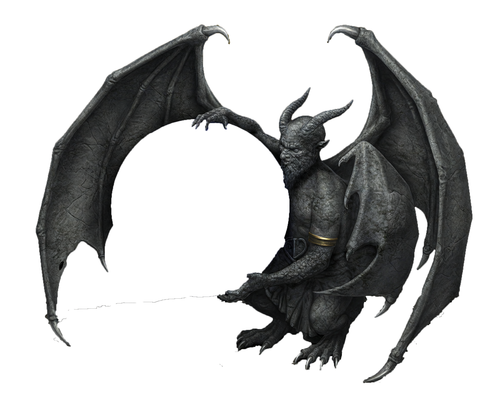
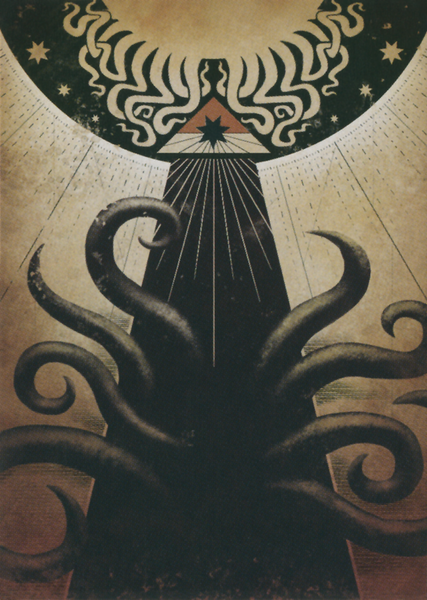
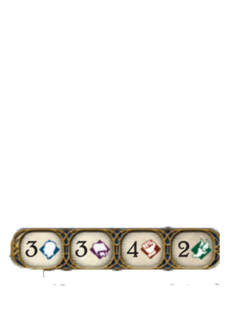
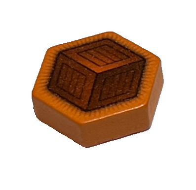
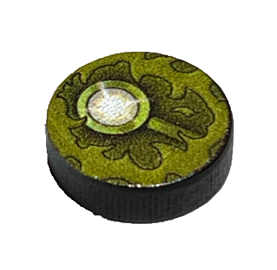
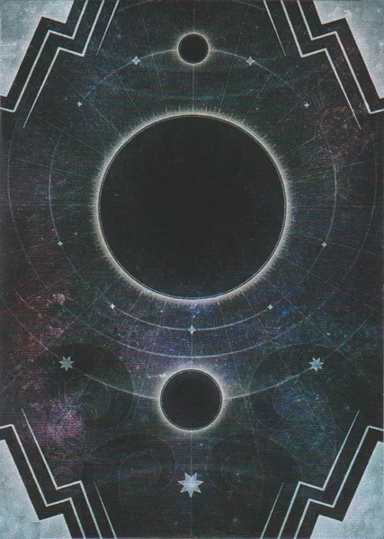

로랜드의 저택
장막 — · 남은 단서 —
현재: 복도
행동력 3 / 3
연결된 장소
조사자 단계
바닥 클릭 방 안 이동 · 연결된 장소 다른 방 이동(행동력 1) · 드래그 회전 · 휠 줌
목표: —

0
+
0
=
0
/
3
토큰 효과
혼돈 주머니

16조우덱
—
0
버린 더미
기록


× 5
× 0
0
카드더미
비어 있음
버린 더미
플레이된 자산
멀리건 페이즈
마음에 들지 않는 시작 손패를 교환할 수 있습니다.
교환할 카드를 좌클릭으로 선택하고(다시 누르면 해제),
다 골랐으면 우클릭으로 확정하세요.
교환할 카드를 좌클릭으로 선택하고(다시 누르면 해제),
다 골랐으면 우클릭으로 확정하세요.
선택 0장
분홍 숫자 : 시간의 흐름과 사건에 의해 발생한 파멸
— 되돌릴 수 없습니다.
— 되돌릴 수 없습니다.
노란 숫자 : 적·조력자·장소에 놓이는 파멸
— 그 대상을 처리하면 함께 사라집니다.
— 그 대상을 처리하면 함께 사라집니다.
파멸값이 임계치에 다다르면 사건이 진행됩니다.
◆
— 계속하려면 아무 키나 누르세요 —
스킵하려면 esc를 길게 누르세요.